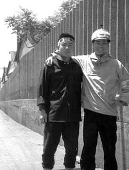

昭和35年5月、三池闘争激励のため、浅沼稲次郎社会党書記長が三池労組三川支部を訪問した。 写真右端で横を向いた鉢巻姿の男性が当時の三池労組組合長宮川睦男さん。宮川さんは昭和54年3月17日肺がんで病死した。 享年62歳だった。 浅沼社会党書記長は、昭和35年10月12日、東京・日比谷公会堂における三党首立会演説会（自由民主党・池田勇人、民主社 会党・西尾末広）で熱弁中、右翼少年Ｙ（当時17歳）に壇上で刺殺された。
（写真：伊藤さん提供）  （写真：伊藤さん提供） 昭和34年鉱山学校を卒業して三川鉱に入社。しかしすぐに三池争議が始まり、三池労組員として 青年行動隊に即編入されて闘争に明け暮れる毎日でした。まだ、19歳の時です。写真はその頃社会党浅沼書記長がホッパーを 激励にお出でになった時、私が青年行動隊として警護中、各鉱に配置されていた同級生達と遭遇したときのものです。（伊藤さん）
（写真：伊藤さん提供） 昭和34年鉱山学校を卒業して三川鉱に入社。しかしすぐに三池争議が始まり、三池労組員として 青年行動隊に即編入されて闘争に明け暮れる毎日でした。まだ、19歳の時です。写真はその頃社会党浅沼書記長がホッパーを 激励にお出でになった時、私が青年行動隊として警護中、各鉱に配置されていた同級生達と遭遇したときのものです。（伊藤さん）
昭和34年鉱山学校を卒業して三川鉱に入社。しかしすぐに三池争議が始まり、三池労組員として 青年行動隊に即編入されて闘争に明け暮れる毎日でした。まだ、19歳の時です。写真はその頃社会党浅沼書記長がホッパーを 激励にお出でになった時、私が青年行動隊として警護中、各鉱に配置されていた同級生達と遭遇したときのものです。（伊藤さん）